Línea de Tiempo Tecnológica
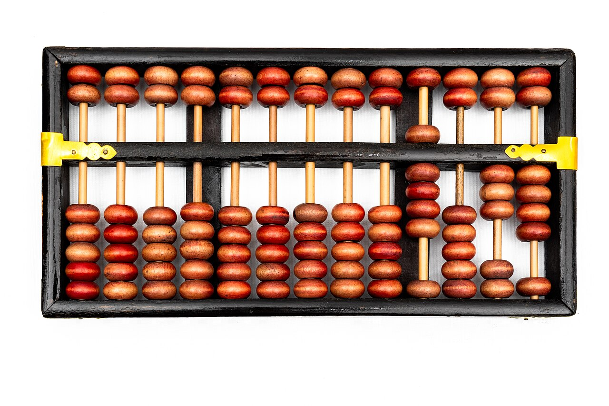
El Ábaco
- Descripción: Instrumento manual de cuentas y varillas utilizado para asistir en aritmética.
- Tecnología: Mecánica manual (madera y piedra).
- Aporte: Primer sistema formal de registro y cálculo posicional rudimentario.
- Cambio generado: Externalizó la carga de la memoria temporal humana, estandarizando el cálculo.
- Fuente: Documento "Línea de Tiempo Informática" (Citas 3, 4, 5).
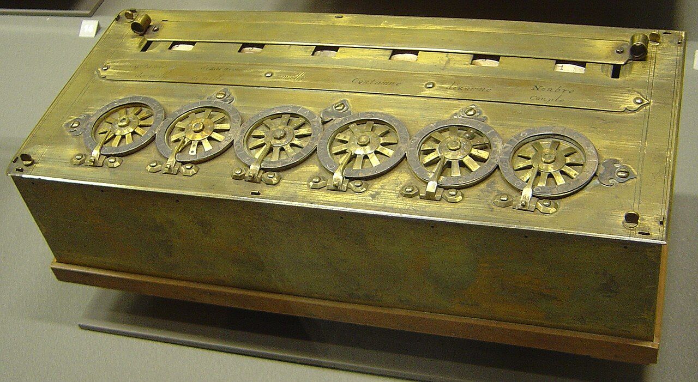
La Pascalina
- Descripción: Calculadora mecánica diseñada por Blaise Pascal.
- Tecnología: Mecánica de precisión (engranajes, ruedas metálicas y trinquetes).
- Aporte: Automatizó las operaciones de suma y resta mediante un mecanismo de acarreo automático.
- Cambio generado: Transición clave; demostró que el razonamiento lógico paso a paso podía emularse por una máquina sin intervención del juicio humano continuo.
- Fuente: Reportes Técnicos Estudiantiles y "Línea de Tiempo Informática".
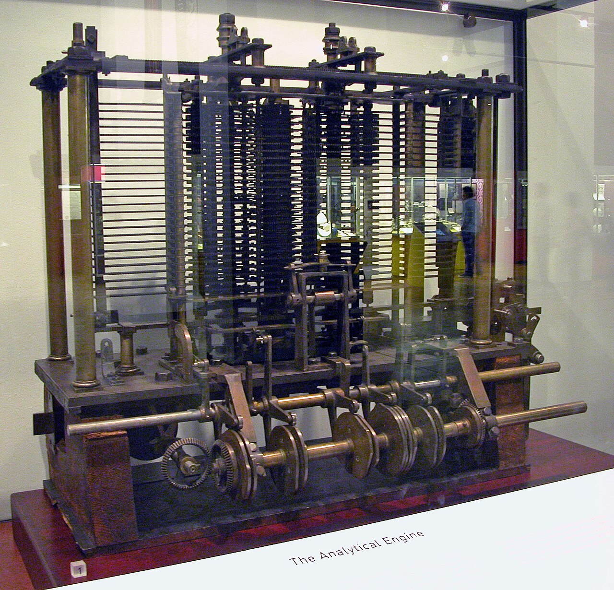
Máquina Analítica (Babbage)
- Descripción: Diseño teórico de la primera máquina de propósito general.
- Tecnología: Mecánica a vapor y control por Tarjetas Perforadas (Jacquard).
- Aporte: División conceptual de la máquina en "Molino" (ALU actual) y "Almacén" (Memoria RAM).
- Cambio generado: Sentó las bases teóricas de la arquitectura de computadores modulares y la programación (software).
- Fuente: "Línea de Tiempo Informática" (Citas 1, 3, 4, 6).
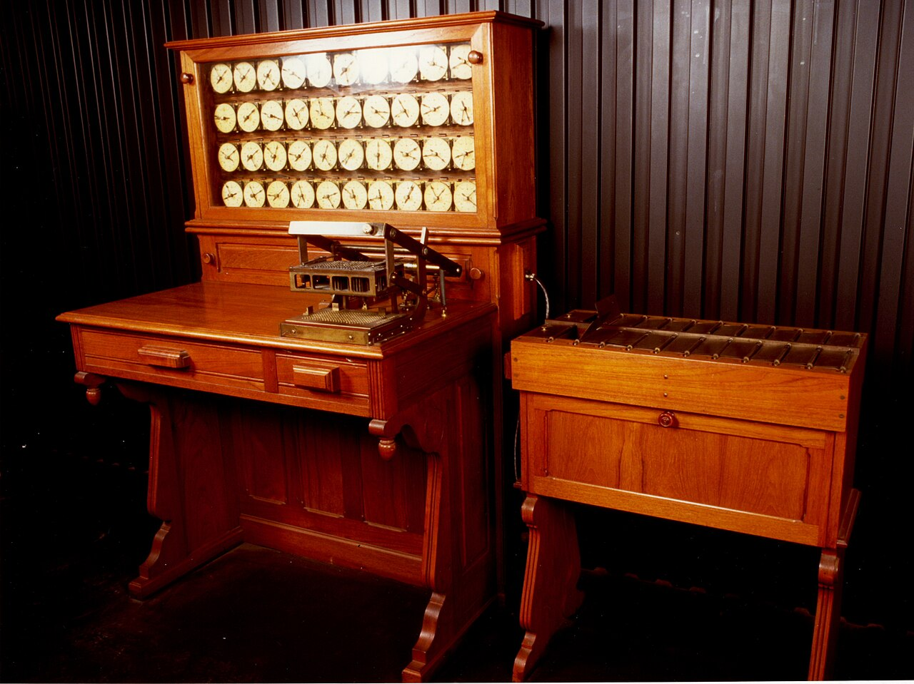
Máquina Tabuladora
- Descripción: Máquina para contabilizar los datos del censo de EE.UU.
- Tecnología: Electromecánica, tarjetas perforadas y circuitos cerrados en mercurio.
- Aporte: Primer sistema automatizado para el procesamiento masivo de datos comerciales y gubernamentales.
- Cambio generado: Redujo el procesamiento de años a meses. Fundó la empresa que se convertiría en IBM.
- Fuente: Documento "Línea de Tiempo Informática".
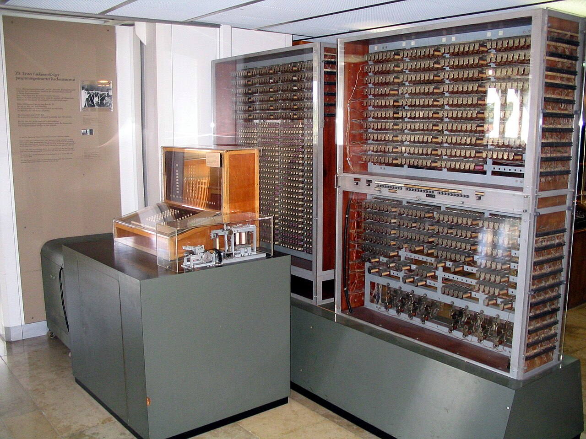
Computadora Z3 (Konrad Zuse)
- Descripción: Primera computadora funcional completamente automática y programable.
- Tecnología: Electromecánica (2,300 relés telefónicos).
- Aporte: Aritmética de punto flotante y uso estricto de Lógica Booleana.
- Cambio generado: Abandono definitivo del lento y pesado sistema decimal en favor del procesamiento binario puro.
- Fuente: "Línea de Tiempo Informática" (Citas 7, 8).
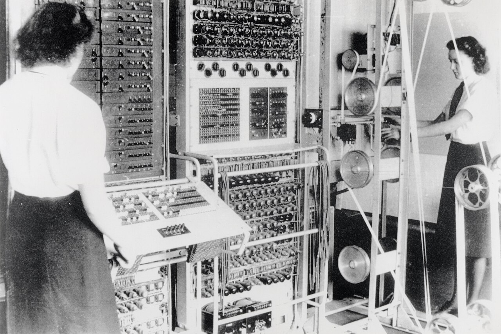
Colossus (Criptografía)
- Descripción: Computadora británica en Bletchley Park para romper códigos de cifrado alemanes.
- Tecnología: Electrónica pura (1,500 válvulas de vacío) y sensores ópticos (5,000 caracteres/s).
- Aporte: Primer procesamiento digital programable a gran escala del mundo.
- Cambio generado: Demostró que la electrónica sin partes móviles mecánicas multiplicaba la velocidad de cálculo astronómicamente.
- Fuente: Presentación "Línea del tiempo JMB.pdf" y documento central.
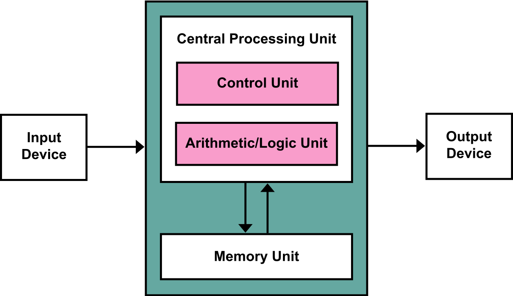
Arquitectura Von Neumann
- Descripción: Modelo lógico ("First Draft on EDVAC") para la estructura de computadores.
- Tecnología: Arquitectura Teórica Lógica / Diseño de Hardware.
- Aporte: El concepto de "Programa Almacenado": memoria unificada para datos y código.
- Cambio generado: Eliminó la necesidad de recablear físicamente la máquina para cada tarea (como pasaba en ENIAC), naciendo el software moderno.
- Fuente: Análisis Técnico - S. Prada / "Línea de Tiempo Informática".
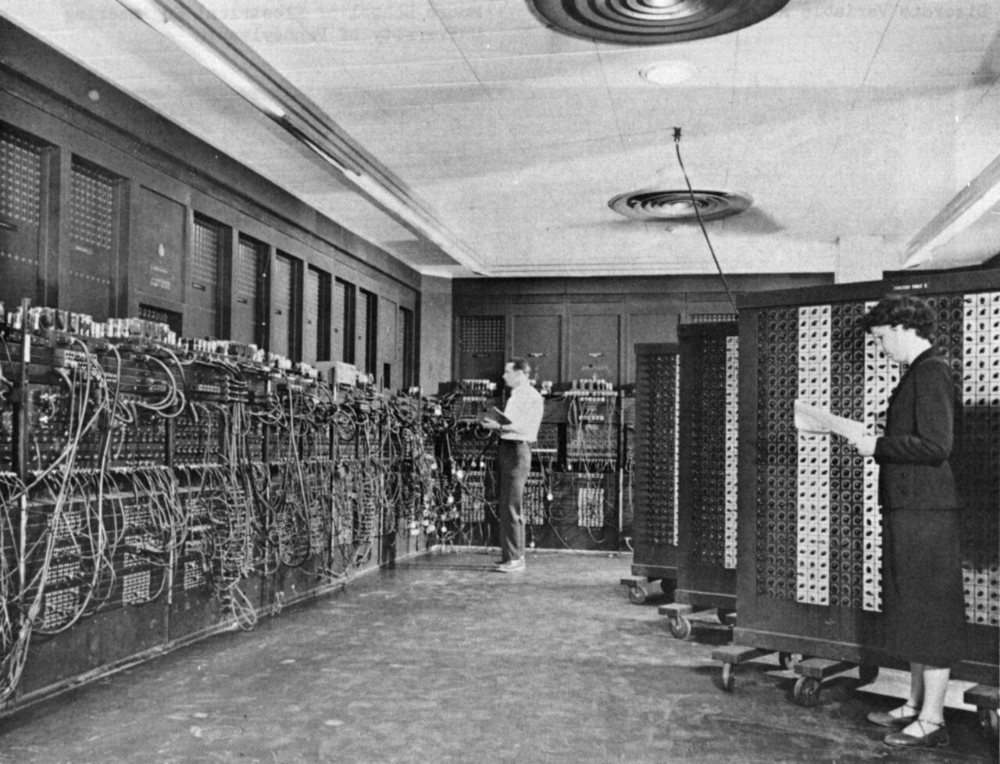
ENIAC (1ra Generación)
- Descripción: Primera computadora electrónica y digital de propósito general (EE.UU.).
- Tecnología: Termoiónica: 17,400 tubos de vacío. Consumía 150-200 kW.
- Aporte: Poder de cálculo colosal para su época (5,000 sumas por segundo para tablas balísticas).
- Cambio generado: Inició formalmente la Primera Generación, aunque padecía de problemas térmicos severos por usar vacío.
- Fuente: "Línea del Tiempo NSA" y "Línea de Tiempo Informática".
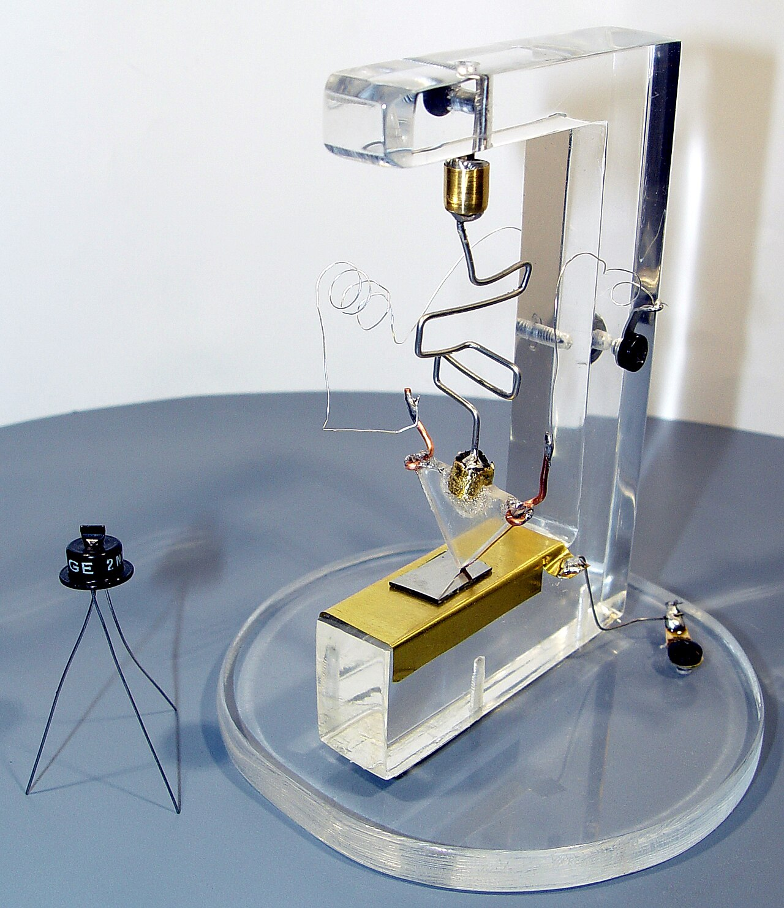
El Transistor (2da Generación)
- Descripción: Dispositivo inventado en Bell Labs que modula corriente eléctrica.
- Tecnología: Estado sólido (Semiconductores: Germanio/Silicio).
- Aporte: Realiza la misma función lógica de un tubo de vacío, pero sin filamentos calientes ni vacíos frágiles.
- Cambio generado: Incrementó brutalmente la confiabilidad (MTBF) y redujo el tamaño, iniciando la 2da Generación.
- Fuente: Documentos del Taller ("Análisis Técnico" / "Línea de Tiempo Informática").
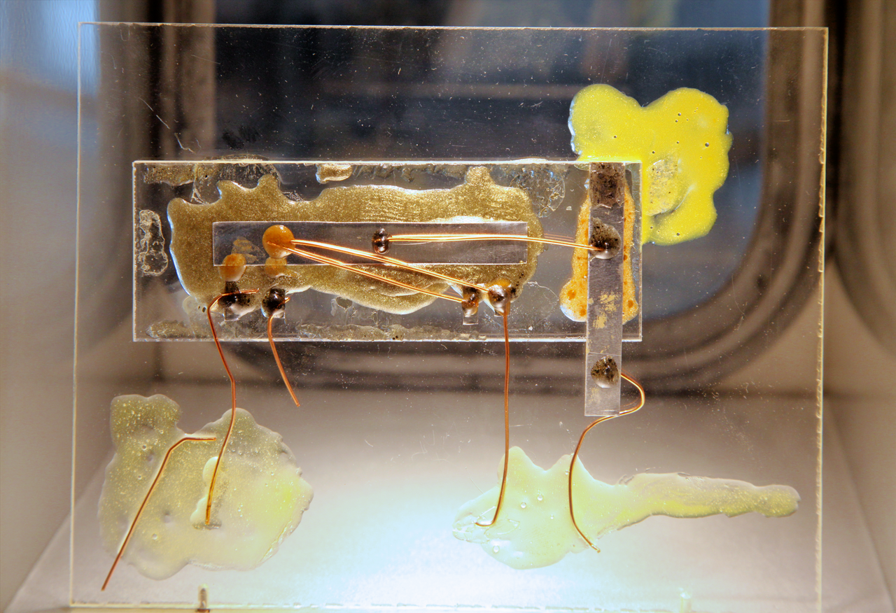
El Circuito Integrado (3ra Gen)
- Descripción: Agrupación de miles de transistores en una placa monolítica.
- Tecnología: Litografía Planar y Vaporización sobre oblea de Silicio (Noyce/Kilby).
- Aporte: Eliminó el cableado manual propenso a fallas (la "Tiranía de los Números").
- Cambio generado: Miniaturización masiva de los circuitos (Microchips) reduciendo los costos dramáticamente.
- Fuente: Documento "Línea de Tiempo Informática".
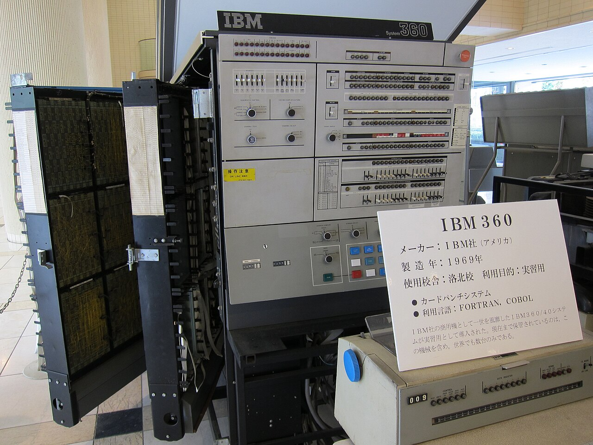
IBM System/360
- Descripción: Primera familia de ordenadores corporativos compatibles.
- Tecnología: Tecnología Lógica Sólida (SLT) e integración a gran escala.
- Aporte: El software escrito para la máquina más lenta servía sin cambios en la más rápida.
- Cambio generado: Estandarizó permanentemente el Byte de 8 bits y direccionamiento de 32 bits.
- Fuente: "Línea de Tiempo.pdf" y documento central.
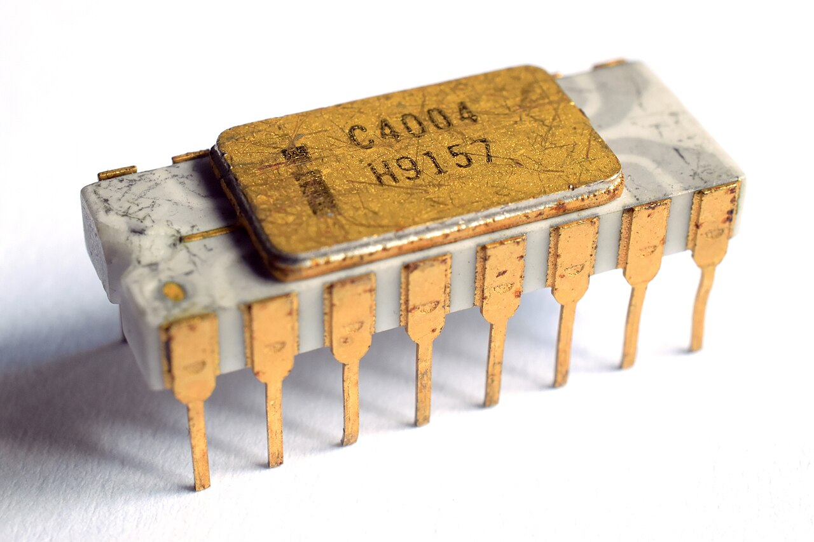
Intel 4004 (4ta Gen)
- Descripción: Primer microprocesador monolítico comercial del mundo.
- Tecnología: Microchip LSI (2,300 transistores pMOS en 10 micrómetros).
- Aporte: Unificó Unidad de Control, ALU y registros lógicos en un único chip de 4 bits.
- Cambio generado: Inició formalmente la era de los Microcomputadores al condensar el cerebro de la máquina.
- Fuente: Todos los documentos del Taller.
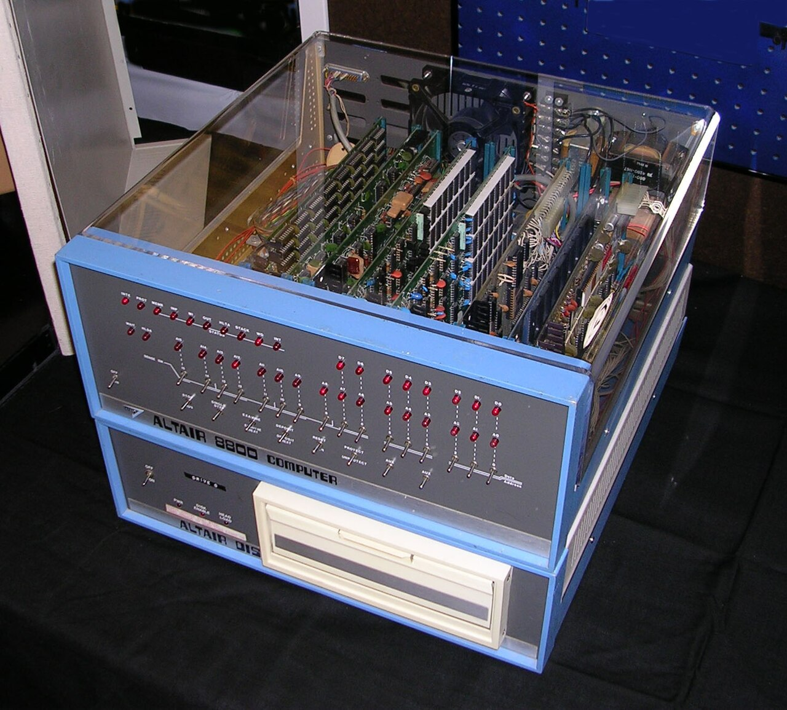
Altair 8800
- Descripción: Computador personal en kit para aficionados.
- Tecnología: Procesador Intel 8080 (8-bits) y Bus de Expansión S-100.
- Aporte: Arquitectura abierta mediante ranuras que permitió crear hardware de terceros (tarjetas gráficas, etc.).
- Cambio generado: Generó el ecosistema donde nació Microsoft (Altair BASIC) y validó el software comercial.
- Fuente: "Línea de Tiempo Informática".
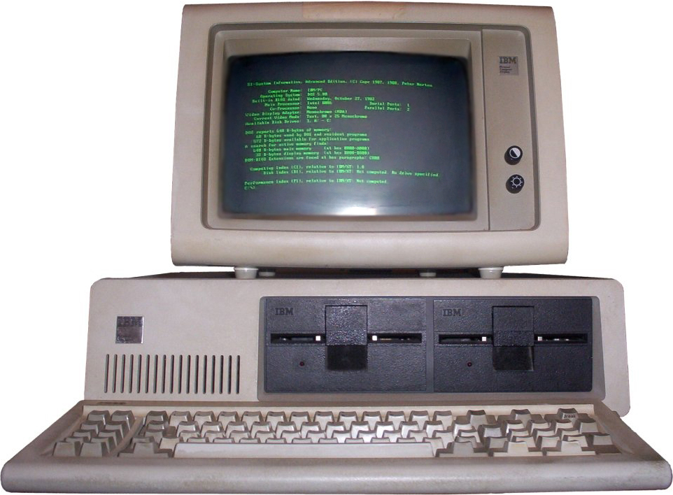
IBM PC 5150 y "Clones"
- Descripción: Estándar de ordenador personal comercial.
- Tecnología: Arquitectura abierta x86 (Intel 8088), SO MS-DOS e Ingeniería de Sala Limpia.
- Aporte: Democratizó el hardware, empresas como Compaq clonaron legalmente su BIOS.
- Cambio generado: Dominio de Windows/x86, la guerra de precios global masificó los computadores en cada escritorio.
- Fuente: Presentación visual y "Línea de Tiempo Informática".
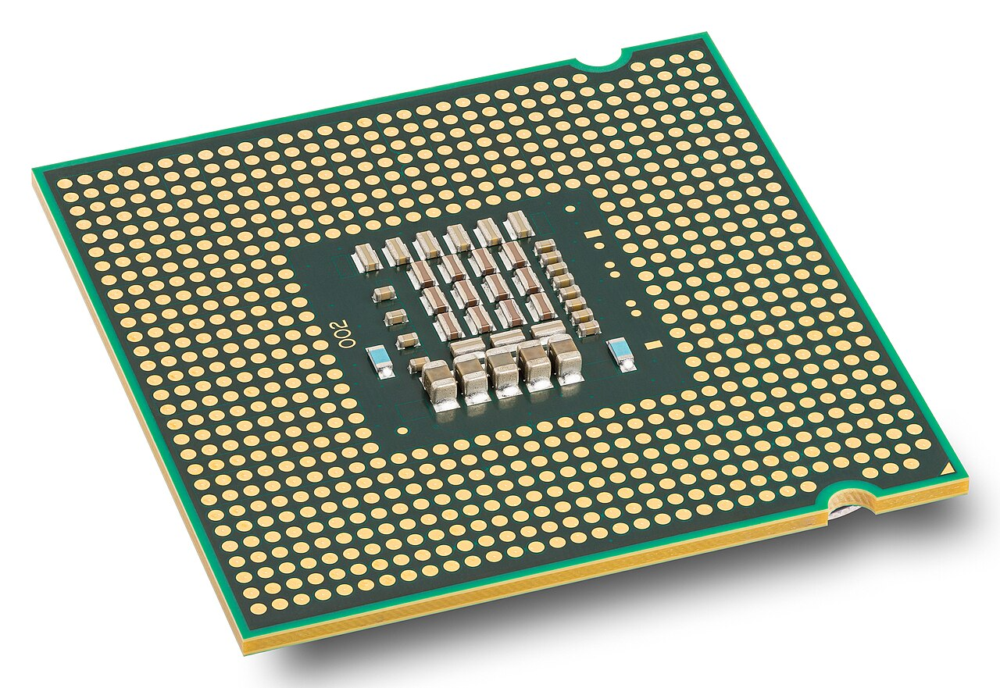
Procesadores Multi-núcleo
- Descripción: Arquitecturas que albergan varios procesadores independientes en una misma pastilla.
- Tecnología: Paralelismo a nivel de hilos (TLP) en silicio masivo.
- Aporte: Superó el "Muro Térmico" del escalado de Dennard al bajar la frecuencia y repartir el trabajo.
- Cambio generado: Transición forzosa de la industria del software hacia programación concurrente y en hilos.
- Fuente: Documento "Análisis Técnico".
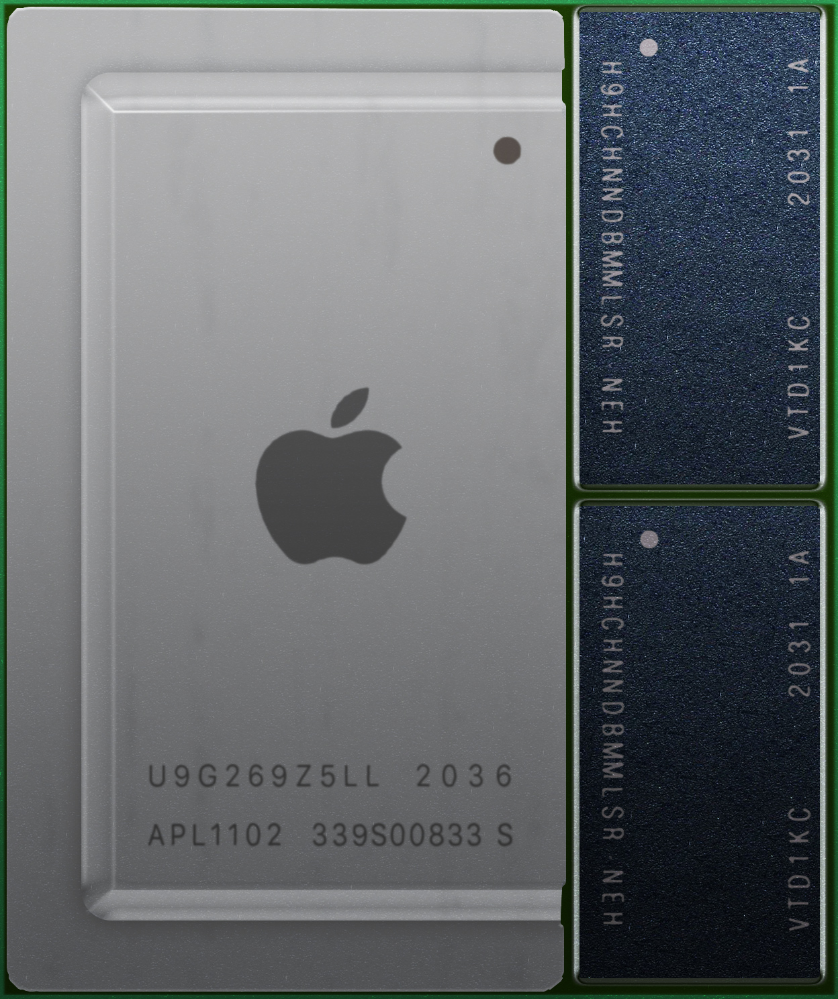
SoCs Heterogéneos (UMA)
- Descripción: System-on-a-Chip combinando CPU, GPU y aceleradores (NPU) en un solo silicio (Ej. Apple Silicon M).
- Tecnología: Litografía EUV ultra extrema (3nm) y Arquitectura de Memoria Unificada (UMA).
- Aporte: Eliminación de cuellos de botella de transferencia de RAM, logrando eficiencias de ~10W.
- Cambio generado: Permite procesar enormes Modelos de Lenguaje de IA Generativa de forma local y privada.
- Fuente: "Línea de Tiempo Informática".
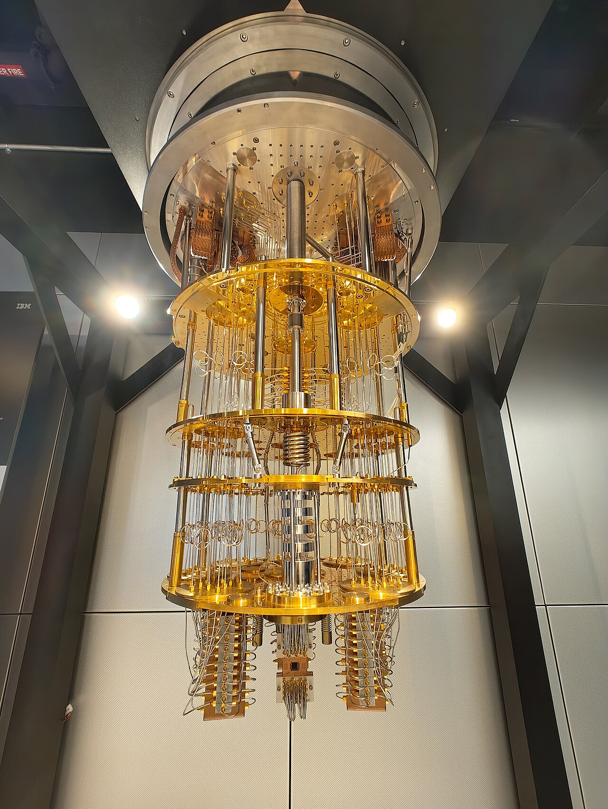
Supremacía Cuántica
- Descripción: Sistemas informáticos post-silicio operados a niveles subatómicos.
- Tecnología: Cúbits controlados, refrigeración criogénica y Superposición/Entrelazamiento Cuántico.
- Aporte: Capacidad masiva para evaluar probabilidades múltiples de manera paralela y no lineal.
- Cambio generado: Romperá criptografía convencional y resolverá cálculos moleculares exponenciales en minutos.
- Fuente: Documento "Análisis Técnico".
Análisis Técnico y Reflexiones
1. ¿Cuál considera que fue uno de los cambios tecnológicos más importantes en la evolución de los computadores? Justifique.
El paso del tubo de vacío (termoiónica) al Transistor de estado sólido y su posterior encapsulamiento en el Circuito Integrado. Técnicamente, esto representó pasar de una lógica electromecánica térmica (altas fallas, alto consumo, calor) a la física de semiconductores. Esto mejoró el MTBF (Tiempo Medio Entre Fallos) y permitió la miniaturización, haciendo viable empacar la ALU, registros y unidad de control en procesadores pequeños y baratos, posibilitando todas las eras posteriores.
2. ¿Cómo ha cambiado la relación entre el tamaño físico de los computadores y su capacidad de procesamiento?
Ha cambiado de manera inversamente proporcional y exponencial. Históricamente, la ENIAC pesaba 30 toneladas ocupando cuartos enteros para rendir ~5,000 operaciones/segundo. Actualmente, la nanolitografía (gobernada por la Ley de Moore y el escalado de Dennard) nos permite tener chips del tamaño de un sello que ejecutan trillones de operaciones por segundo (TFLOPS). La miniaturización de transistores acerca físicamente los componentes, reduciendo la latencia electrónica dramáticamente.
3. ¿Qué relación existe entre la evolución de los procesadores y el desarrollo de los computadores actuales?
El procesador, dictado por la Arquitectura Von Neumann, es el motor subyacente. La evolución desde la palabra rudimentaria de 4-bits (Intel 4004) hasta los anchos de banda paralelos multinúcleo de 64-bits determinó estrictamente la capacidad del sistema para ejecutar software. Al procesar más hilos, permitió la transición de herramientas de terminal de texto a sistemas operativos complejos de multitarea gráfica y experiencias visuales fluidas (smartphones, PCs).
4. ¿Qué componentes o tecnologías han permitido que los computadores sean más rápidos y eficientes?
Fundamentalmente los materiales semiconductores, las impresiones por litografía en Silicio, y los procesadores de múltiples núcleos (Multi-Core). Además, tecnologías contemporáneas como memorias DDR5/SSD NVMe que eliminan cuellos de botella de disco mecánico, e instrucciones de ejecución súper-escalares y coprocesadores de gráficas masivas paralelizables (GPUs).
5. ¿Qué características de los computadores actuales podrían marcar una nueva etapa en la evolución de la computación?
Estamos en el umbral de una era Cognitiva y Heterogénea. Las Unidades de Procesamiento Neuronal (NPUs) integradas en SoCs marcan el adiós a la máquina programada de ejecución estrictamente lineal (software clásico) para abrazar arquitecturas que soportan modelos probabilísticos y de inferencia in-situ (IA local). Más allá del silicio, la Computación Cuántica promete el salto fuera del modelo binario de estado definido ("0" y "1") hacia los cúbits entrelazados, abriendo el paso a cálculos optimizados inabarcables para la arquitectura tradicional.